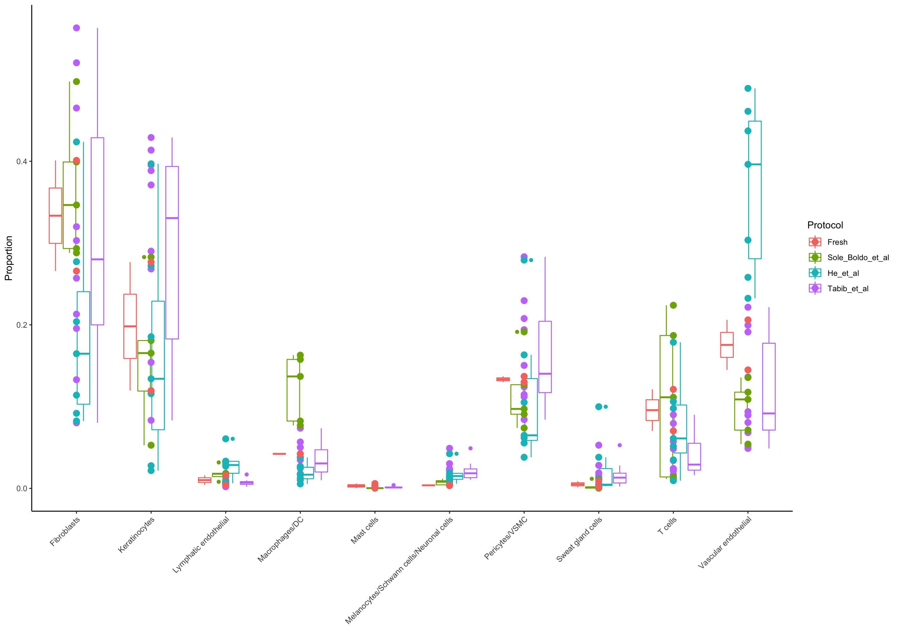

Cell Annotation
Dominique Paul
2022-01-31
Last updated: 2022-01-31
Checks: 6 1
Knit directory: 02_Protocol/analysis/
This reproducible R Markdown analysis was created with workflowr (version 1.7.0). The Checks tab describes the reproducibility checks that were applied when the results were created. The Past versions tab lists the development history.
The R Markdown file has unstaged changes. To know which version of the R Markdown file created these results, you’ll want to first commit it to the Git repo. If you’re still working on the analysis, you can ignore this warning. When you’re finished, you can run wflow_publish to commit the R Markdown file and build the HTML.
Great job! The global environment was empty. Objects defined in the global environment can affect the analysis in your R Markdown file in unknown ways. For reproduciblity it’s best to always run the code in an empty environment.
The command set.seed(20211228) was run prior to running the code in the R Markdown file. Setting a seed ensures that any results that rely on randomness, e.g. subsampling or permutations, are reproducible.
Great job! Recording the operating system, R version, and package versions is critical for reproducibility.
Nice! There were no cached chunks for this analysis, so you can be confident that you successfully produced the results during this run.
Great job! Using relative paths to the files within your workflowr project makes it easier to run your code on other machines.
Great! You are using Git for version control. Tracking code development and connecting the code version to the results is critical for reproducibility.
The results in this page were generated with repository version 5f4cea3. See the Past versions tab to see a history of the changes made to the R Markdown and HTML files.
Note that you need to be careful to ensure that all relevant files for the analysis have been committed to Git prior to generating the results (you can use wflow_publish or wflow_git_commit). workflowr only checks the R Markdown file, but you know if there are other scripts or data files that it depends on. Below is the status of the Git repository when the results were generated:
Ignored files:
Ignored: .DS_Store
Ignored: Metadata/.DS_Store
Ignored: Metadata/cell_annotation_markers/.DS_Store
Ignored: Paper/
Ignored: analysis/.DS_Store
Ignored: analysis/.RData
Ignored: analysis/.Rhistory
Ignored: analysis/Supple_table_1.png
Ignored: analysis/Unused/.DS_Store
Ignored: analysis/figure/
Ignored: code/.DS_Store
Ignored: code/seeds/.DS_Store
Ignored: data/
Ignored: output/.DS_Store
Ignored: output/plots/.DS_Store
Untracked files:
Untracked: Metadata/~$cluster_annotation_map.xlsx
Untracked: analysis/FVC_quick_marker.Rmd
Untracked: analysis/logs/EDI_05_Annotation.Rmd-2022-01-31-19h-33m-54s-err.txt
Untracked: analysis/logs/EDI_05_Annotation.Rmd-2022-01-31-19h-33m-54s-out.txt
Untracked: analysis/logs/EDI_05_Annotation.Rmd-2022-01-31-19h-54m-46s-err.txt
Untracked: analysis/logs/EDI_05_Annotation.Rmd-2022-01-31-19h-54m-46s-out.txt
Untracked: analysis/logs/EDI_05_Annotation.Rmd-2022-01-31-19h-55m-02s-err.txt
Untracked: analysis/logs/EDI_05_Annotation.Rmd-2022-01-31-19h-55m-02s-out.txt
Untracked: analysis/logs/EDI_05_Annotation.Rmd-2022-01-31-20h-33m-08s-err.txt
Untracked: analysis/logs/EDI_05_Annotation.Rmd-2022-01-31-20h-33m-08s-out.txt
Untracked: analysis/logs/P2_01_data_comparison.Rmd-2022-01-31-15h-32m-54s-err.txt
Untracked: analysis/logs/P2_01_data_comparison.Rmd-2022-01-31-15h-32m-54s-out.txt
Untracked: analysis/logs/P2_02_Cell_Cycle.Rmd-2022-01-31-16h-25m-56s-err.txt
Untracked: analysis/logs/P2_02_Cell_Cycle.Rmd-2022-01-31-16h-25m-56s-out.txt
Untracked: analysis/logs/P2_03_Fresh_only_subclustering.Rmd-2022-01-31-16h-32m-06s-err.txt
Untracked: analysis/logs/P2_03_Fresh_only_subclustering.Rmd-2022-01-31-16h-32m-06s-out.txt
Untracked: analysis/logs/P2_03_FvC_Annotations.Rmd-2022-01-31-16h-43m-33s-err.txt
Untracked: analysis/logs/P2_03_FvC_Annotations.Rmd-2022-01-31-16h-43m-33s-out.txt
Untracked: analysis/logs/P2_04_FvC_gene_expression_plot.Rmd-2022-01-31-16h-48m-06s-err.txt
Untracked: analysis/logs/P2_04_FvC_gene_expression_plot.Rmd-2022-01-31-16h-48m-06s-out.txt
Untracked: analysis/logs/index.Rmd-2022-01-31-16h-53m-18s-err.txt
Untracked: analysis/logs/index.Rmd-2022-01-31-16h-53m-18s-out.txt
Untracked: output/plots/Suppl_Figure5.png
Untracked: output/plots/Suppl_table_1.csv
Untracked: output/plots/Suppl_table_1.png
Untracked: output/plots/Suppl_table_2.csv
Untracked: output/plots/Suppl_table_2.png
Untracked: output/plots/old/
Untracked: output/plots/overview_figure_fvc.png
Untracked: output/plots_31Jan/
Unstaged changes:
Modified: Metadata/cluster_annotation_map.xlsx
Modified: analysis/EDI_01_Loading_and_Preprocessing.Rmd
Modified: analysis/EDI_03_Batch_correction.Rmd
Modified: analysis/EDI_05_Annotation.Rmd
Modified: analysis/P2_01_data_comparison.Rmd
Modified: analysis/P2_03_Fresh_only_subclustering.Rmd
Modified: analysis/P2_03_FvC_Annotations.Rmd
Modified: analysis/admin.rmd
Modified: analysis/plots.Rmd
Modified: code/general_purpose_code.R
Deleted: output/plots/figure3.png
Deleted: output/plots/figure3_supplemental.png
Deleted: output/plots/figure4.png
Deleted: output/plots/figure5.png
Deleted: output/plots/figure6.png
Note that any generated files, e.g. HTML, png, CSS, etc., are not included in this status report because it is ok for generated content to have uncommitted changes.
These are the previous versions of the repository in which changes were made to the R Markdown (analysis/EDI_05_Annotation.Rmd) and HTML (docs/EDI_05_Annotation.html) files. If you’ve configured a remote Git repository (see ?wflow_git_remote), click on the hyperlinks in the table below to view the files as they were in that past version.
| File | Version | Author | Date | Message |
|---|---|---|---|---|
| Rmd | 239a294 | dominique-paul-uzh | 2022-01-30 | Added new clustering after meeting 29-Jan-2022 |
| html | 239a294 | dominique-paul-uzh | 2022-01-30 | Added new clustering after meeting 29-Jan-2022 |
Load data
sce <- readRDS(file="../data/EOS_Files/EDI_EOS4_sce.rds")
rownames(sce) <- rowData(sce)$Symbol
colLabels(sce) <- colData(sce)$kgraph_clusters_harmonyplotReducedDim(sce, "UMAP",colour_by = "Sample", other_fields = c("Protocol"), point_size=0.25) +
get_sample_colours(levels(sce$Sample)) +
facet_wrap(~Protocol)Scale for 'colour' is already present. Adding another scale for 'colour',
which will replace the existing scale.
| Version | Author | Date |
|---|---|---|
| 239a294 | dominique-paul-uzh | 2022-01-30 |
Load and add own labels for the clusters
cluster_annotation_mapping <- read.xlsx("../metadata/cluster_annotation_map.xlsx", sheet="Integrated")
kableExtra::kable(cluster_annotation_mapping)| Cluster.ID | Annotation | UMAP |
|---|---|---|
| 12 | Lymphatic endothelial | Integrated dataset, k=20 |
| 14 | Lymphatic endothelial | Integrated dataset, k=20 |
| 3 | Keratinocytes | Integrated dataset, k=21 |
| 10 | Keratinocytes | Integrated dataset, k=21 |
| 13 | Keratinocytes | Integrated dataset, k=21 |
| 5 | Pericytes/VSMC | Integrated dataset, k=22 |
| 8 | Pericytes/VSMC | Integrated dataset, k=22 |
| 2 | T cells | Integrated dataset, k=23 |
| 4 | Macrophages/DC | Integrated dataset, k=24 |
| 1 | Vascular endothelial | Integrated dataset, k=27 |
| 15 | Vascular endothelial | Integrated dataset, k=27 |
| 11 | Sweat gland cells | Integrated dataset, k=28 |
| 6 | Melanocytes/Schwann cells/Neuronal cells | Integrated dataset, k=29 |
| 7 | Fibroblasts | Integrated dataset, k=30 |
| 9 | Fibroblasts | Integrated dataset, k=30 |
| add manually | Mast cells | NA |
sce$manual_labels_coarse <- mapvalues(sce$kgraph_clusters_walktrap_harmony, cluster_annotation_mapping$Cluster.ID, cluster_annotation_mapping$Annotation)The following `from` values were not present in `x`: add manuallyManually annotate mast cells
# Plot UMAP
# plotReducedDim(sce, "UMAP", colour_by="manual_labels_coarse", text_by="manual_labels_coarse") +
# geom_vline(xintercept=6) +
# geom_vline(xintercept=7) +
# geom_hline(yintercept=5) +
# geom_hline(yintercept=7)
umap_values <- reducedDim(sce, "UMAP")
mask <- as.vector((6 < umap_values[,1]) & (umap_values[,1] < 7) & (5 < umap_values[,2]) & (umap_values[,2] < 7))
new_values <- as.vector(sce$manual_labels_coarse)
new_values[mask] <- "Mast cells"
sce$manual_labels_coarse <- factor(new_values)UMAPs coloured by cluster and cell type group
cat("\n\n## Cell type groups \n\n")Cell type groups
plotReducedDim(sce, "UMAP", colour_by="manual_labels_coarse", text_by="manual_labels_coarse") +
labs(title="Manual labels for high-level clusters",
subtitle = "UMAP of fresh samples combined") +
theme_ipsum_rc() +
get_cell_colours(levels(sce$manual_labels_coarse))Scale for 'colour' is already present. Adding another scale for 'colour',
which will replace the existing scale.
| Version | Author | Date |
|---|---|---|
| 239a294 | dominique-paul-uzh | 2022-01-30 |
cat("\n\n## Cell type annotations coloured by protocol \n\n")Cell type annotations coloured by protocol
plotReducedDim(sce, "UMAP", colour_by="Protocol", text_by="manual_labels_coarse") +
labs(title="Manual labels for high-level clusters",
subtitle = "UMAP of fresh and control samples combined") +
theme_ipsum_rc() +
get_protocol_colours(levels(sce$Protocol))Scale for 'colour' is already present. Adding another scale for 'colour',
which will replace the existing scale.
| Version | Author | Date |
|---|---|---|
| 239a294 | dominique-paul-uzh | 2022-01-30 |
UMAP Density
sample_cols <- function(samples, n_split=5, palette = rainbow){
n_samples <- length(samples)
splitind <- split(seq_len(n_samples), ceiling(seq(0.01, n_split-0.01, length.out = n_samples)))
colind <- unlist(purrr::map(seq_len(ceiling(n_samples/n_split)),
~ purrr::map(seq_len(n_split),
function(i)splitind[[i]][.x])))
colind <- colind[!is.na(colind)]
colors_used <- palette(n_samples)[colind]
}
plotUmapDensity <- function(sce, colour_by="Protocol", facet_by="Sample"){
colors_used <- sample_cols(unique(sce[[colour_by]]),
n_split=ifelse(length(unique(sce[[colour_by]])) > 5, 5, length(unique(sce[[colour_by]]))),
palette = rainbow)
suppressWarnings(suppressMessages(
plotReducedDim(sce, "UMAP", colour_by = colour_by, other_fields = c(facet_by)) +
scale_color_manual(values=colors_used) +
ggplot2::facet_wrap(vars(!!sym(facet_by))) +
geom_density2d(color="black", n=500) +
labs(colour=colour_by)
# get_protocol_colours(levels(sce$Protocol))
))
}suppressWarnings(suppressMessages(plotUmapDensity(sce)))We define two functions which plot (1) a UMAP coloured by the selected annotation and (2) plot a bar chart faceted by a given annotation on the y-axis. Essentially, both functions use the same set of colours. We want to be able to call them in different code chunks though as to adjust the plot size.
plotUMAPwithFixedColours <- function(sce, column, aggr_by="Sample", fill_lab=column, point_size=1){
options(warn = -1)
colors_used <- sample_cols(unique(sce[[column]]),
n_split=ifelse(length(unique(sce[[column]])) > 5, 5, length(unique(sce[[column]]))),
palette = rainbow)
pl1 <- plotReducedDim(sce,"UMAP",
colour_by=column,
text_by=column,
point_size=point_size)+
theme(legend.position = c(1.01,0.7),
legend.background = element_rect(color="grey",fill = "white"))+
scale_color_manual(values=colors_used) +
theme(legend.position = "none") +
labs(fill=fill_lab) +
theme_ipsum_rc() +
get_cell_colours(levels(sce$manual_labels_coarse))
cat("\n\nColoured UMAP\n\n")
print(pl1)
}
plotUmapProportions <- function(sce, column, aggr_by="Sample", facet_by="Protocol", split_rows=TRUE, fill_lab=column){
options(warn = -1)
colors_used <- sample_cols(unique(sce[[column]]),
n_split=ifelse(length(unique(sce[[column]])) > 5, 5, length(unique(sce[[column]]))),
palette = rainbow)
if(is.null(facet_by)){
propdf <- table(colData(sce)[[column]], sce[[aggr_by]]) %>%
as.data.frame() %>%
dplyr::rename(!!column := Var1,
!!aggr_by := Var2,
Abundance = Freq) %>%
dplyr::group_by(!!sym(aggr_by)) %>%
dplyr::filter(Abundance > 0) %>%
dplyr::mutate(Proportion = Abundance/sum(Abundance))
} else {
propdf <- table(colData(sce)[[column]],
sce[[facet_by]], sce[[aggr_by]]) %>%
as.data.frame() %>%
dplyr::rename(!!column := Var1,
!!facet_by := Var2,
!!aggr_by := Var3,
Abundance = Freq) %>%
dplyr::group_by(!!sym(aggr_by)) %>%
dplyr::filter(Abundance > 0) %>%
dplyr::mutate(Proportion = Abundance/sum(Abundance))
}
pl2 <- propdf %>%
ggplot(aes(x = !!sym(aggr_by), y = Proportion, fill=!!sym(column))) +
geom_bar(stat = "identity") +
theme_classic() +
theme(axis.text.x = element_text(angle = 45,hjust=1),
strip.text.y = element_text(angle=0,size=7)) +
labs(x="",fill=fill_lab)+
scale_fill_manual(values=colors_used) +
theme_ipsum_rc() +
get_cell_colours(levels(sce$manual_labels_coarse))
if(is.null(facet_by) & split_rows){
pl2 <- pl2 + facet_grid(rows=vars(!!sym(column)),
scales = "free_x", space="free")
} else if(!is.null(facet_by) & !split_rows){
pl2 <- pl2 + facet_grid(cols=vars(!!sym(facet_by)),
scales = "free_x", space="free")
} else if(!is.null(facet_by) & split_rows) {
pl2 <- pl2 + facet_grid(rows=vars(!!sym(column)),cols=vars(!!sym(facet_by)),
scales = "free_x", space="free")
}
options(warn = 0)
print(pl2)
}UMAP proportions
UMAP plot
# other labels
# annotation_col_names <- c("labels_blaz", "labels_raynolds", "labels_he_et_al_coarse", "labels_he_et_al_fine", "labels_tabib_2018", "labels_xue")
annotation_col_names <- c("manual_labels_coarse")
for (annotation in annotation_col_names){
# cat(paste0("\n\n### ", annotation, "\n\n"))
plotUMAPwithFixedColours(sce, annotation, point_size=0.25)
}Scale for 'colour' is already present. Adding another scale for 'colour',
which will replace the existing scale.
Scale for 'colour' is already present. Adding another scale for 'colour',
which will replace the existing scale.Coloured UMAP

| Version | Author | Date |
|---|---|---|
| 239a294 | dominique-paul-uzh | 2022-01-30 |
Proportions by cell annotation
for (annotation in annotation_col_names){
# cat(paste0("\n\n### ", annotation,"\n\n"))
suppressWarnings(plotUmapProportions(sce, annotation, "Protocol", NULL, TRUE))
}
| Version | Author | Date |
|---|---|---|
| 239a294 | dominique-paul-uzh | 2022-01-30 |
Boxplots (own labels)
To compare the numbers of cell types across the protocols, we plot boxplots of the cell type annotations in each of their samples.
for (annotation in annotation_col_names){
# cat(paste0("\n\n### ", annotation, "\n\n"))
# Generate a data frame with the columns (1) cell type name (2) protocol (3) Sample name (4) abundance of the cell type in that sample (i.e. a count) and (5) the proportion of that cell type in the given sample
propdf <- table(colData(sce)[,annotation], sce$Protocol, sce$Sample) %>%
as.data.frame() %>%
dplyr::rename(Labels = Var1,
Protocol = Var2,
Sample = Var3,
Abundance = Freq) %>%
dplyr::group_by(Sample) %>%
dplyr::filter(Abundance > 0) %>%
dplyr::mutate(Proportion = Abundance/sum(Abundance))
# Plot the boxplots grouped by cell type on the x-axis and subdivided (and coloured) by protocol as separate boxplots next to each other
print(propdf %>%
ggplot(aes(x = Labels, y = Proportion, color=Protocol)) +
geom_boxplot() +
geom_point(size = 3) +
theme_classic() +
theme(axis.text.x = element_text(angle = 45,hjust=1)) +
labs(x="")) +
get_protocol_colours(propdf$Protocol)
}
| Version | Author | Date |
|---|---|---|
| 239a294 | dominique-paul-uzh | 2022-01-30 |
Save data
file_path <- "../data/EOS_Files/EDI_EOS5_sce.rds"
saveRDS(sce, file = file_path)
upload_file_to_iSEE(file_path)Command executed:
scp -i ~/.ssh/id_imls_servers /Users/dominiquepaul/xRobinson\ Group/02_Protocol/data/EOS_Files/EDI_EOS5_sce.rds dominique@imlspenticton.uzh.ch:/home/Shared/retger/synovial/data/protocol_paper_BBDP/sce/EDI_EOS5_sce___2022-01-31.rds
sessionInfo()R version 4.1.0 (2021-05-18)
Platform: x86_64-apple-darwin17.0 (64-bit)
Running under: macOS Big Sur 10.16
Matrix products: default
BLAS: /Library/Frameworks/R.framework/Versions/4.1/Resources/lib/libRblas.dylib
LAPACK: /Library/Frameworks/R.framework/Versions/4.1/Resources/lib/libRlapack.dylib
locale:
[1] en_US.UTF-8/en_US.UTF-8/en_US.UTF-8/C/en_US.UTF-8/en_US.UTF-8
attached base packages:
[1] parallel stats4 stats graphics grDevices utils datasets
[8] methods base
other attached packages:
[1] RColorBrewer_1.1-2 openxlsx_4.2.5
[3] purrr_0.3.4 dbscan_1.1-8
[5] hrbrthemes_0.8.6 AUCell_1.16.0
[7] GSEABase_1.56.0 graph_1.72.0
[9] annotate_1.72.0 XML_3.99-0.8
[11] AnnotationDbi_1.56.2 scater_1.22.0
[13] ggplot2_3.3.5 scuttle_1.4.0
[15] stringr_1.4.0 dplyr_1.0.7
[17] plyr_1.8.6 BiocParallel_1.28.3
[19] CelliD_1.2.0 SeuratObject_4.0.4
[21] Seurat_4.0.6 tidySingleCellExperiment_1.4.0
[23] SingleCellExperiment_1.16.0 SummarizedExperiment_1.24.0
[25] Biobase_2.54.0 GenomicRanges_1.46.1
[27] GenomeInfoDb_1.30.0 IRanges_2.28.0
[29] S4Vectors_0.32.3 BiocGenerics_0.40.0
[31] MatrixGenerics_1.6.0 matrixStats_0.61.0
loaded via a namespace (and not attached):
[1] utf8_1.2.2 R.utils_2.11.0
[3] reticulate_1.22 tidyselect_1.1.1
[5] RSQLite_2.2.9 htmlwidgets_1.5.4
[7] grid_4.1.0 Rtsne_0.15
[9] munsell_0.5.0 ScaledMatrix_1.2.0
[11] codetools_0.2-18 ica_1.0-2
[13] umap_0.2.7.0 future_1.23.0
[15] miniUI_0.1.1.1 withr_2.4.3
[17] colorspace_2.0-2 highr_0.9
[19] knitr_1.37 rstudioapi_0.13
[21] ROCR_1.0-11 tensor_1.5
[23] Rttf2pt1_1.3.8 listenv_0.8.0
[25] labeling_0.4.2 git2r_0.29.0
[27] GenomeInfoDbData_1.2.7 polyclip_1.10-0
[29] farver_2.1.0 bit64_4.0.5
[31] rprojroot_2.0.2 parallelly_1.30.0
[33] vctrs_0.3.8 generics_0.1.1
[35] xfun_0.29 R6_2.5.1
[37] ggbeeswarm_0.6.0 rsvd_1.0.5
[39] bitops_1.0-7 spatstat.utils_2.3-0
[41] cachem_1.0.6 fgsea_1.20.0
[43] DelayedArray_0.20.0 RcppArmadillo_0.10.7.5.0
[45] assertthat_0.2.1 promises_1.2.0.1
[47] scales_1.1.1 beeswarm_0.4.0
[49] gtable_0.3.0 beachmat_2.10.0
[51] globals_0.14.0 goftest_1.2-3
[53] workflowr_1.7.0 tictoc_1.0.1
[55] rlang_0.4.12 systemfonts_1.0.3
[57] splines_4.1.0 extrafontdb_1.0
[59] lazyeval_0.2.2 spatstat.geom_2.3-1
[61] yaml_2.2.1 reshape2_1.4.4
[63] abind_1.4-5 httpuv_1.6.4
[65] extrafont_0.17 tools_4.1.0
[67] kableExtra_1.3.4 ellipsis_0.3.2
[69] spatstat.core_2.3-2 jquerylib_0.1.4
[71] ggridges_0.5.3 Rcpp_1.0.8
[73] sparseMatrixStats_1.6.0 zlibbioc_1.40.0
[75] RCurl_1.98-1.5 rpart_4.1-15
[77] openssl_1.4.6 deldir_1.0-6
[79] pbapply_1.5-0 viridis_0.6.2
[81] cowplot_1.1.1 zoo_1.8-9
[83] ggrepel_0.9.1 cluster_2.1.2
[85] fs_1.5.2 magrittr_2.0.1
[87] data.table_1.14.2 RSpectra_0.16-0
[89] scattermore_0.7 lmtest_0.9-39
[91] RANN_2.6.1 whisker_0.4
[93] fitdistrplus_1.1-6 patchwork_1.1.1
[95] mime_0.12 evaluate_0.14
[97] xtable_1.8-4 gridExtra_2.3
[99] compiler_4.1.0 tibble_3.1.6
[101] KernSmooth_2.23-20 crayon_1.4.2
[103] R.oo_1.24.0 htmltools_0.5.2
[105] mgcv_1.8-38 later_1.3.0
[107] tidyr_1.1.4 DBI_1.1.2
[109] MASS_7.3-54 Matrix_1.4-0
[111] cli_3.1.0 R.methodsS3_1.8.1
[113] igraph_1.2.10 pkgconfig_2.0.3
[115] plotly_4.10.0 spatstat.sparse_2.1-0
[117] xml2_1.3.3 svglite_2.0.0
[119] vipor_0.4.5 bslib_0.3.1
[121] webshot_0.5.2 XVector_0.34.0
[123] rvest_1.0.2 digest_0.6.29
[125] sctransform_0.3.2 RcppAnnoy_0.0.19
[127] Biostrings_2.62.0 spatstat.data_2.1-2
[129] rmarkdown_2.11 leiden_0.3.9
[131] fastmatch_1.1-3 uwot_0.1.11
[133] gdtools_0.2.3 DelayedMatrixStats_1.16.0
[135] shiny_1.7.1 lifecycle_1.0.1
[137] nlme_3.1-153 jsonlite_1.7.3
[139] BiocNeighbors_1.12.0 viridisLite_0.4.0
[141] askpass_1.1 fansi_1.0.2
[143] pillar_1.6.4 lattice_0.20-45
[145] KEGGREST_1.34.0 fastmap_1.1.0
[147] httr_1.4.2 survival_3.2-13
[149] glue_1.6.0 zip_2.2.0
[151] png_0.1-7 bit_4.0.4
[153] stringi_1.7.6 sass_0.4.0
[155] blob_1.2.2 BiocSingular_1.10.0
[157] memoise_2.0.1 irlba_2.3.5
[159] future.apply_1.8.1